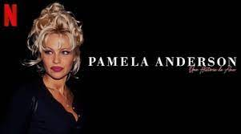
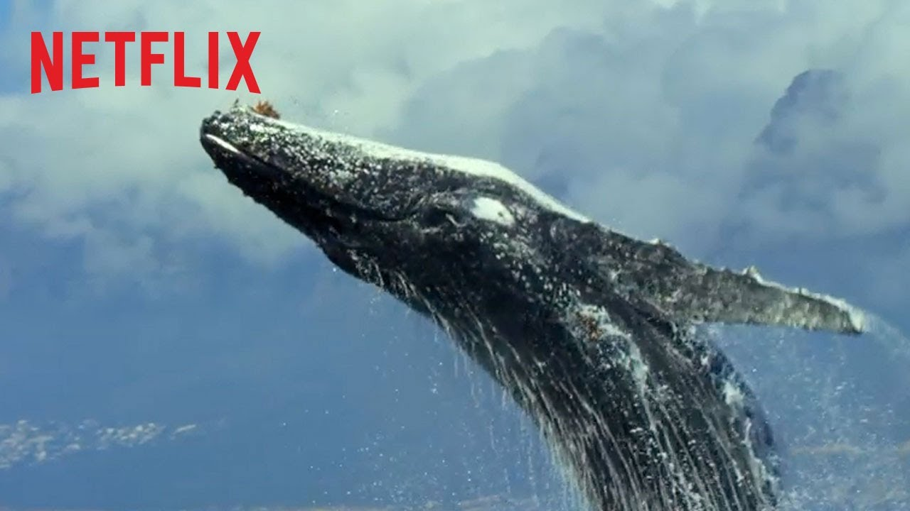
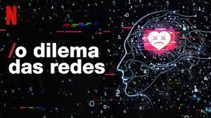
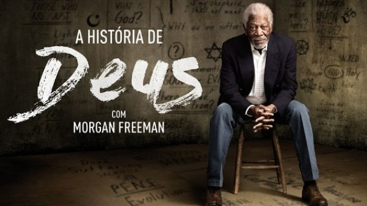
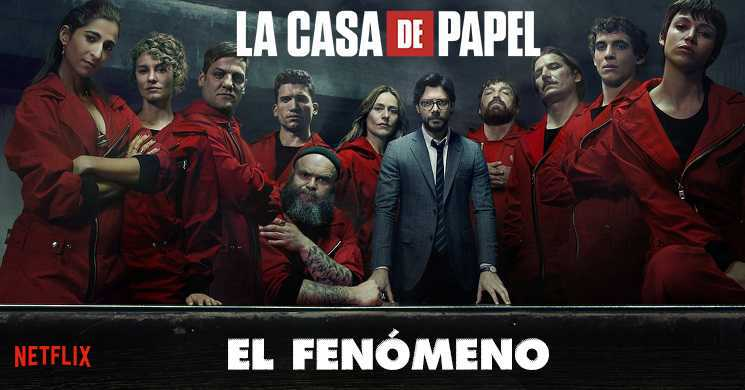
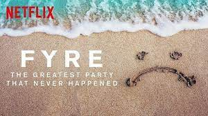
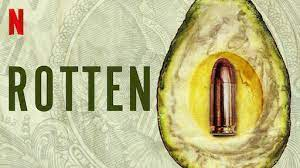
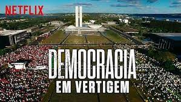
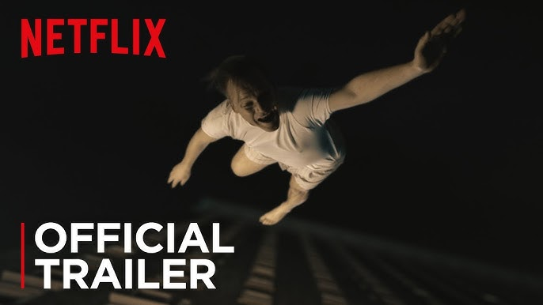

10 melhores documentarios da netflix
1. Pamela Anderson: uma história de amor (2023)

A vida da atriz norte-americana Pamela Anderson é contada nesse documentário lançado em janeiro de 2023. Com direção de Ryan White, a produção conta também com o trabalho do filho de Pamela nos bastidores.
A iniciativa para a criação do filme foi da própria Pamela, que desejava contar sua história com "suas próprias palavras", como ela mesmo afirma em determinado momento do documentário.
São abordados vários pontos importantes de sua trajetória e sua carreira, como a ascensão e o casamento conturbado com Tommy Lee, assim como sua sex tape vazada.
O Rei dos Clones (2023)
O sul coreano Hwang Woo-suk é considerado um dos maiores nomes da ciência em todo o planeta. Pioneiro nas pesquisas relacionadas com a clonagem, ele se viu, no entanto, em uma grande polêmica quando as suas pesquisas abriram margem aos estudos de clonagem humana. Demitido de todas as empresas em que trabalhava, o documentário explora a história de Hwang e também sobre a ética relacionada com as pesquisas de clonagem.
Nosso Planeta (2019)
Podemos concordar que o planeta Terra vive uma de suas maiores crises ambientais de todos os tempos. Nosso Planeta é uma série documental que apresenta imagens de tirar o fôlego revelando a diversidade das belezas naturais que ainda estão entre nós. Dos mesmos criadores de Planeta Terra e Planeta Azul, esta série original emociona com sua fotografia exuberante e curiosidades fascinantes sobre o nosso planeta.
O Dilema das Redes (2020)
Este polêmico documentário lançado pela Netflix reflete sobre os perigos das redes sociais na manipulação dos usuários de internet. O filme apresenta entrevistas com ex-funcionários de grandes plataformas virtuais que explicam com detalhes a forma com que a inteligência artificial tem sido utilizada para manipular o consumo dos seus usuários e o impacto que as redes provocam inclusive na construção de ideologias políticas.
A História de Deus com Morgan Freeman (2016-2017)
Uma série documental que apresenta uma interessante viagem pelo mundo das religiões à procura de respostas sobre as questões primordiais da fé. Em cada episódio, um curioso e bem disposto Morgan Freeman explora um aspecto sobre o divino com a ajuda de especialistas. Uma maneira bastante agradável de descobrir o que liga as diferentes religiões, aproveitando ainda para conhecer diferentes países.
La Casa de Papel: El Fenómeno (2020)
Esse documentário analisa as razões do sucesso da série espanhola La Casa de Papel, fenômeno mundial da Netflix. Podemos conferir imagens de bastidores das temporadas 3 e 4, além de entrevistas com atores e diretores. Os fãs da série vão amar ver depoimentos e cenas exclusivas com os intérpretes de Tóquio, Berlim, Rio, Nairóbi, Professor e Cia. Para quem ainda não viu as temporadas 3 e 4, cuidado: há spoilers!
Fyre Festival: Fiasco no Caribe (2019)
Era para ser um festival de música luxuoso, mas acabou sendo um belíssimo fracasso. Acompanhe os bastidores do que deveria ter sido uma viagem de sonho para uns, um evento milionário para alguns e um simples trabalho para outros, mas se tornou um enorme pesadelo para todos!
Rotten (2018-2019)
A crise de alimentos que assola o mundo é explorada no documentário Rotten, onde podemos entender diversas questões relativas ao mundo corporativo das grandes empresas que controlam o que ingerimos diariamente. A verdade por trás de grandes problemas de saúde que têm afetado grande parte da população será difícil de engolir.
Democracia em Vertigem (2019)
Partindo de um ponto de vista bastante íntimo, Petra Costa aborda a recente crise política vivida pelo Brasil, desde a ascensão de Lula como presidente até a atual polarização vivida pelo país. O filme foi indicado ao Oscar 2020 na categoria Melhor Documentário.
Wormwood (2017)
Essa minissérie de seis episódios mergulha num caso enigmático: em 1953, um cientista que participava de um programa secreto da CIA (a agência de inteligência dos EUA) morreu após cair da janela de um hotel em Nova York. A série mistura encenações, entrevistas e imagens de arquivo a fim de investigar as circunstâncias dessa morte misteriosa.